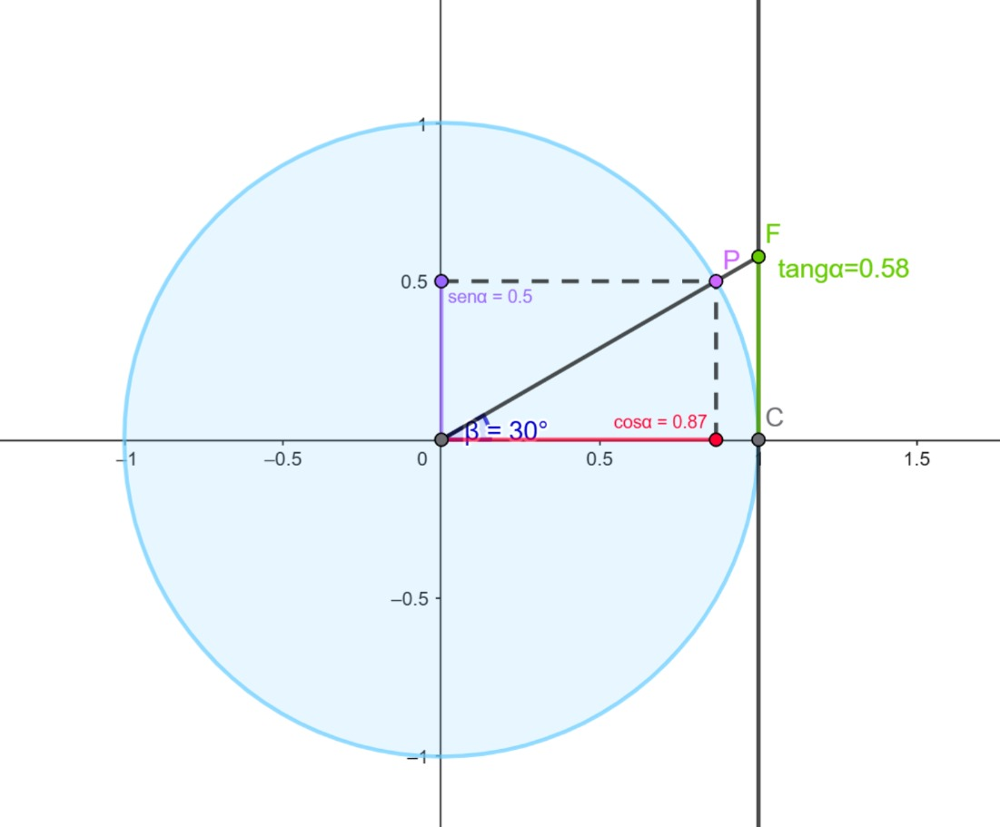
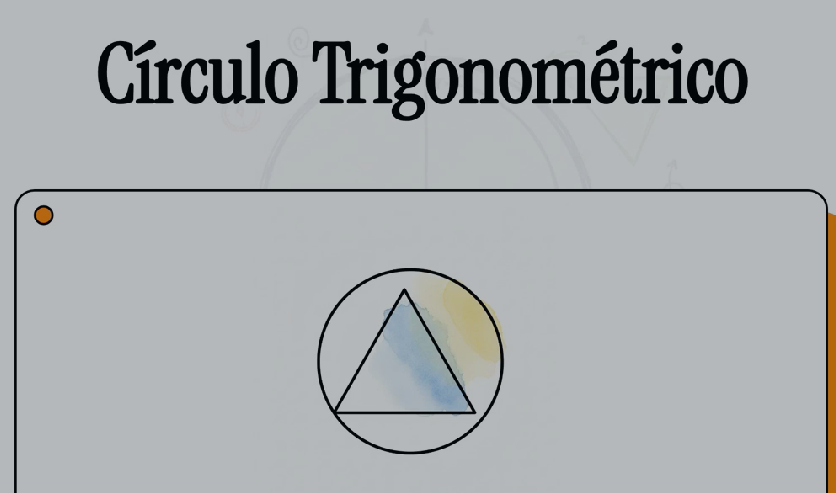

Professores
Guilherme Machado Ferreira e Samara Cardoso Reis
Resumo — Círculo Trigonométrico
1. O que é o círculo trigonométrico?
O círculo trigonométrico é uma circunferência de raio 1, com centro na origem do plano cartesiano.

Ele é usado para estudar:
- Seno (eixo y)
- Cosseno (eixo x)
- Tangente (\( \tan(α)=\frac{sen(α)}{\cos(α)}\))
- Localização dos ângulo
- Conversão entre graus e radianos
2. Sentido dos ângulos
- O ângulo começa no eixo x positivo.
- Sentido anti-horário: forma ângulos positivos.
- Sentido horário: forma ângulos negativos.
3. Quadrantes
No círculo trigonométrico, os sinais do seno, cosseno e tangente variam de acordo com a posição do ângulo:
| Quadrante | Intervalo (em graus) | Sinal do Seno | Sinal do Cosseno | Sinal da Tangente |
| I | 0º a 90º | + | + | + |
| II | 90º a 180º | + | - | - |
| III | 180º a 270º | - | - | + |
| IV | 270º a 360º | - | + | - |
3. Conversão de Graus para radianos
Para a conversão de graus para radianos, utilizamos ,como base, o valor de πrad a seguir para achar outros ângulos, utilizando Substituição ou uma regra de três.
πrad = 180º
EX1:
\( \frac{6\pi}{5}\)rad = X°, se πrad = 180º
Logo, temos \( \frac{6 x 180}{5}\) = 216°
EX2:
πrad = 180º
X = 130°
130 x πrad = 180X
X = \( \frac{130\pi}{180}\)rad = \( \frac{13\pi}{18}\)rad
A seguir temos alguns exemplos de conversão de graus para radianos:
| Graus | Radianos |
| 30º | \( \frac{\pi}{6}\) |
| 45º | \( \frac{\pi}{4}\) |
| 60º | \( \frac{\pi}{3}\) |
| 90º | \( \frac{\pi}{2}\) |
| 270º | \( \frac{3\pi}{4}\) |
Vídeo interativo
No vídeo interativo a seguir, vamos retomar conceitos que foram estudados nas aulas anteriores.



.jpeg)

Atividade GeoGebra
Questionário
Complete as perguntas no questionário a seguir:
Feedback
O que você achou dessa aula? Marque as opções que lhe satisfazem.